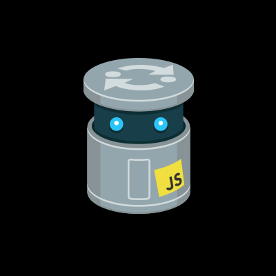

-

CodePen
Description
CodePen is an online community for testing and showcasing user-created HTML, CSS and JavaScript code snippets. It functions as an online code editor and open-source learning environment, where developers can create code snippets, called "pens," and test them.
-

JSFiddle
Description
JSFiddle is an online IDE service and online community for testing and showcasing user-created and collaborational HTML, CSS and JavaScript code snippets, known as 'fiddles'. It allows for simulated AJAX calls.
-
Codepad
Description
Codepad is a place for developers to share code snippets (PHP, Java, Bash, C, C++, Python and more). Create your HTML, CSS and JS Demos. Codepad is an online compiler/interpreter, and a simple collaboration tool. Paste your code below, and codepad will run it and give you a short URL you can use to share it in chat or email.
-
Liveweave
Description
Liveweave is a HTML, CSS & JavaScript editor with real-time (live) preview. It is the ultimate playground for web designers and developers, and a great tool to test, practice and share your creations!
-

JS Bin
Description
JS Bin is ultimately a code sharing site. Along with the code, the complete output of the code is also shared with other developers, colleagues and/or students. As you type into one of the editor “panels”, you and anyone watching your bin will see the output being generated in real-time in the output panel.